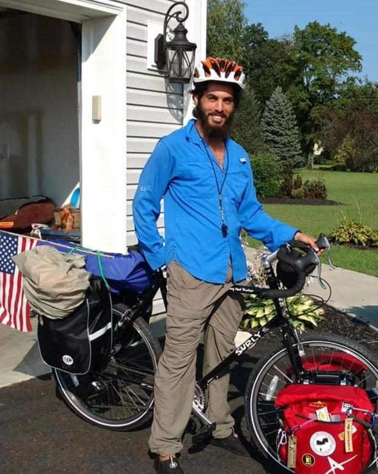
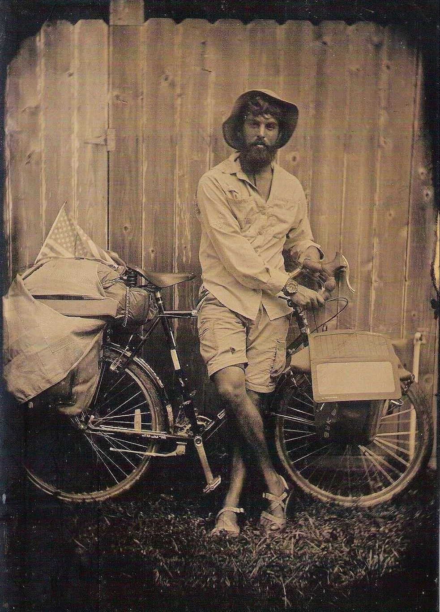
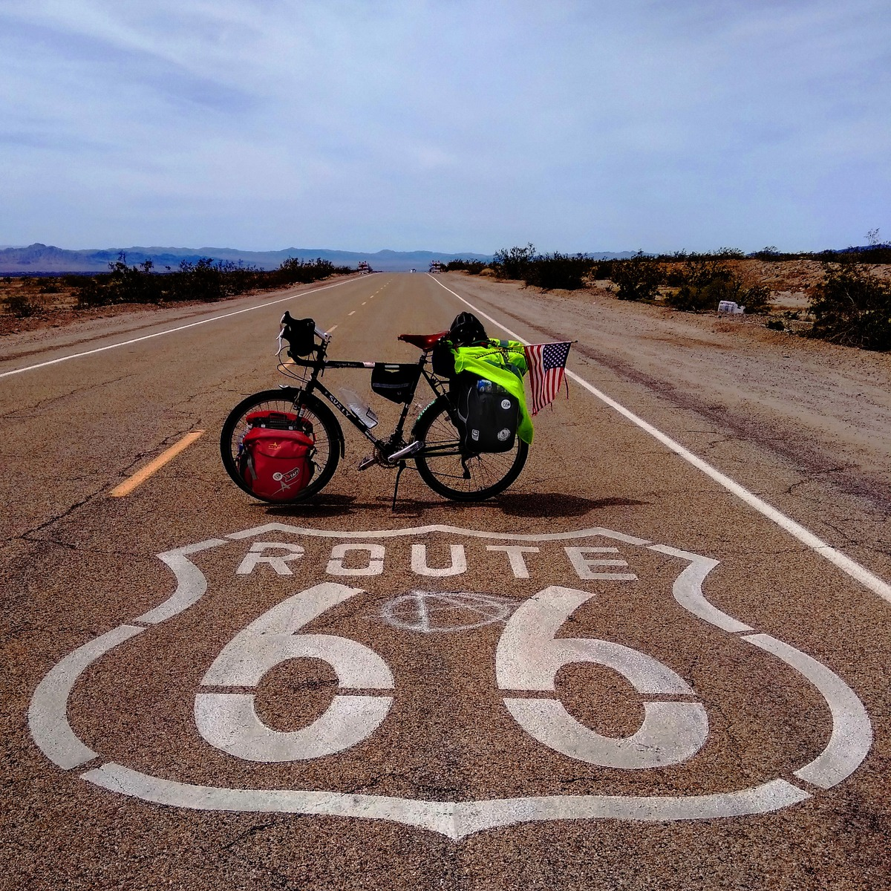
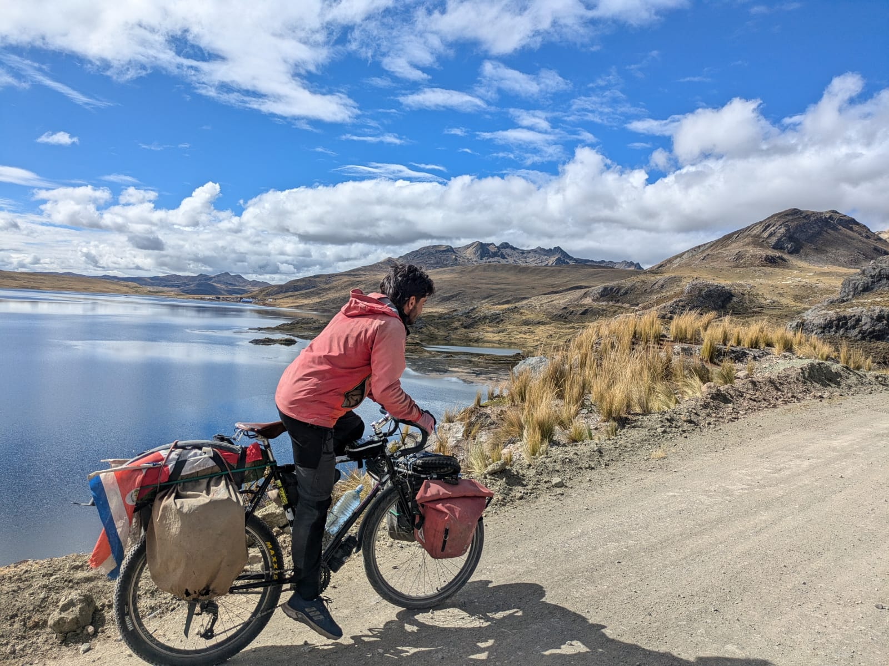
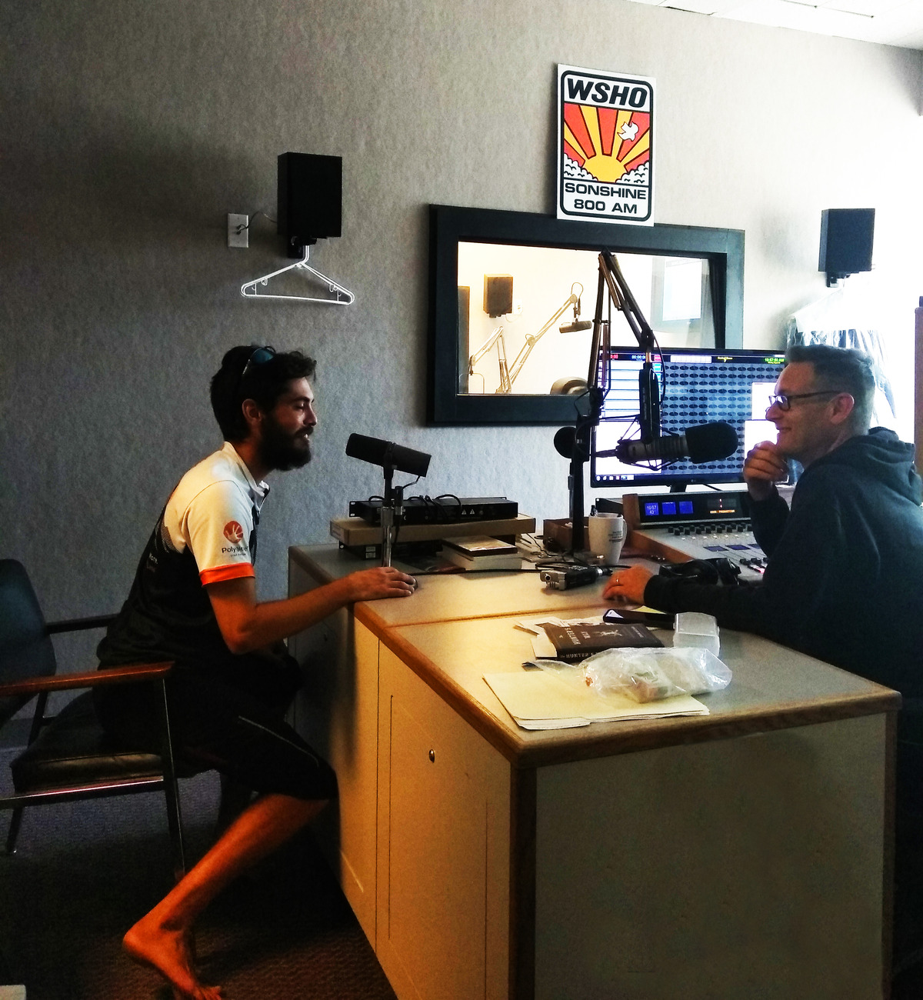
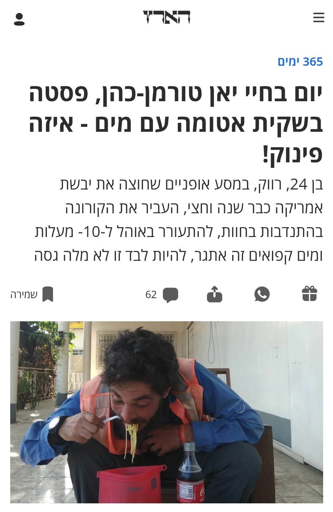

About Me
Data Analyst and Psychology graduate based in Martinique, a French Caribbean island 🌴🏖️.
Equipped with an adventurous spirit and strong analytical thinking, I believe no project is ever too small. From data cleaning and visualization to advanced predictive modeling, my focus is on delivering actionable insights that drive meaningful decisions.
Open communication is the key for any successful partnership 👌.
When I’m not building dashboards, you’ll probably find me at around 12k feet, jumping out of an airplane (60 jumps and counting...) 🪂.
Professional Experience
- Assisted in an academic study by developing a graph‑network representation using the NetworkX module in Python to examine relationships between specific personality traits in primary school children.
- Extracted multilingual text from legacy contracts using Tesseract OCR, improving data accessibility and search capabilities.
- Built a text-analysis dashboard using NLP methods to analyze free-text comments from engineers, revealing actionable insights.
- Contributed to a large-scale, company-wide data validation initiative, ensuring dataset reliability.
- Developed predictive models for engine performance and identified optimal maintenance sweet spots, informing policies valued in millions of euros.
- Created a customer-friction and churn KPI for rigorous measurement of satisfaction.
- Built additional machine-learning models for customer segmentation and supply-chain bottleneck detection.
- Taught programming and statistics to students and PhD candidates.
- Developed web applications using the R Shiny framework, basic HTML and CSS, and created custom R packages.
- Taught English at an intermediate level.
Education
Data Science and Math Courses
Innsbruck University (Austria)

B.A. in Psychology
Ben-Gourion University, final grade: 94 - cum laude

Skills
Programming & Tools
Languages
TOURMAN
Wait, who's Tourman?


Early on, when I started traveling, I adopted this last name as if to let people around me, and mostly myself, know that this journey is no joke. Let me (try to) start from the beginning.
Somewhere in Australia back in 2017, I got this idea of riding a bicycle the entire length of the globe from north to south. A few months later, on August 21st, 2018, I left Brooklyn, NYC, and headed north. Alaska north.
I returned south and started zigzagging between the coasts, deserts, and valleys of this vast country before eventually entering Mexico. In the next few months, the world was about to change - COVID. I found myself in mid-2020 in Costa Rica, unable to continue further south, I decided to go back home. The bike stayed there.
Fast forward to November 2024 (well, you can read in the sections above what I did all this time). I flew back to Costa Rica and re-launched my bike trip with the intention of reaching my destination: Ushuia, fin del mundo.
-

-

I'm in no rush. As one of the podcast titles down below rightfully stated, I don't just ride, I zigzag. So I found myself riding the high Andes, the mighty Amazonas, and - at the time of writing these lines - preparing for a boat-hitchhiking adventure to take me to Martinique, a French Caribbean island.
If you want to read, listen, or watch more, visit the links down below. And if you want to contact me - be it as a programmer or as an adventurer - I'm always glad to share this experience with others.

